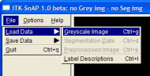
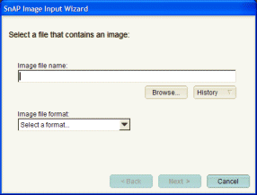
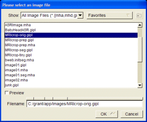
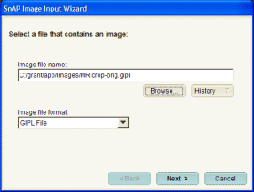
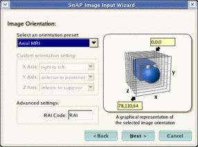
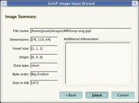

Reading a three dimensional image is not as simple as opening a document in a word processor. To facilitate this process, SNAP offers a special wizard for loading images. This section of the tutorial will guide you through the different pages of this wizard. It will take 5 to 15 minutes to complete.
We strongly recommend that you use a set of images that we have provided as an example during this tutorial. A compressed file containing these images can be downloaded using the link shown below. Please note that the image can not be downloaded using the SNAP help viewer. Copy the link and open it in an external web browser.
Save the file MRI-crop.zip in a convenient directory. This file is a compressed archive, and can be opened using a decompression utility such as WinZip® on Windows or unzip on Unix. The archive contains the following files:
| MRIcrop-orig.gipl | An MRI image of a volunteer's brain |
| MRIcrop-seg.gipl | An example segmentation of the MRI image done using SNAP. |
| MRIcrop-seg.label | A file containing label descriptions for the segmentation |
Please consult your system administrator if you need help with downloading and extracting the example images.
Launch SNAP if you have not done so already.
| Select File | Load Data | Greyscale Image using the menu bar located at the top left corner of the SNAP window, as shown in the picture below: |

The wizard will appear, as shown below:

There are three ways to specify the filename of the greyscale image. First, the filename can be typed into or pasted into the text box at the top of the wizard. Second, the 'Browse...' button can be used to locate the image file in your computer's file system. Finally, the 'History' button can be used to select a file that has been recently opened.
| Click the 'Browse...' button. The following window will appear: |

| Notice that the file browser includes a 'Favorites' menu, which can be used to remember and quickly access frequently used directories. |
We suggest you that for this tutorial you use the file MRIcrop-orig.gipl, which can be downloaded using the instructions given at the beginning of this section.
| Use the file list to find and select an image, and press OK. |
Once you select an image, its compete filename and image format will be displayed in the wizard, as illustrated below. SNAP tries to guess the format of the image file based on the file's extension. For some files, SNAP may not guess correctly, and you will need to select the correct format from the drop box.

| Press the 'Next' button to continue to the next page of the wizard. |
| If you have selected to read an image in RAW file format (this is an advanced feature), please follow this link for additional information, before proceeding to the next subsection. |
A volumetric image is a three-dimensional array of intensities. Every pixel in the image is referenced by three coordinates, x, y, and z, with z indicating the number of the slice to which the pixel belongs, y indicating the row in the slice, and x indicating the column. In order to display images correctly, SNAP needs to know the mapping between this x, y, z image coordiate system and the patient coordinate system. In other words, SNAP needs to know the mapping between directions x, y, z and the right-left, anterior-posterior or inferior-superior directions in the human body.
The orientation page of our wizard is used to specify this mapping, and it is shown below.

This page is used to specify the mapping between the patient coordinate system and the coordinate axes of the three-dimensional image. The orientation can be specified by (a) selecting one of the preset modes, (b) selecting 'Custom Orientation' in the preset drop box and assigning a patient direction to each image axis, or (c) by specifying a three-letter 'RAI' code.
| RAI codes let you specify image orientation quickly. Each of the three letters in the code is an abbreviation for the direction in the patient coordinate system. For example, the code ASR means that the X axis corresponds to the anterior-posterior direction, the Y corresponds to the superior-inferior direction, and the Z corresponds to the right-left direction. The origin of the image is in the anterior-superior-right corner of the body. |
For the image MRIcrop-orig.gipl, use the default orientation setting. For other images, specify the appropriate setting. If you don't know the correct setting for your image, just use the default. You will still be able to use most of SNAP functionality. Press the 'Next' button to continue. |
The last page of the wizard shows summary information about the loaded image.

| Press the 'Finish' button to continue. |
The wizard will disappear and the SNAP main window will display the image: